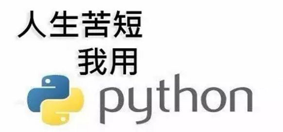

<!DOCTYPE html><html><head><meta charset="utf-8"><title>零基础学习Python，快速入门篇 | 技术学派</title><meta name="viewport" content="width=device-width,initial-scale=1,maximum-scale=1"><meta name="keywords" content="IT培训, Python, 大数据, 人工智能, Web前端, PHP, python"><meta name="description" content="互联网科技发展蓬勃兴起，人工智能时代来临，Python如今越来越火，很多人都想转行做Python。那么什么是Python?Python是一种面向对象的解释型计算机程序设计语言，语法简洁清晰，又具有丰富和强大的库，它又叫做作胶水语言。Python比较简单，容易学习和掌握，对于没有编程基础的人来说比较容易上手。有句话叫万事开头难，所以你一定要做好心理准备。半途而废就没意思啦，千万不能遇到问题就打退堂鼓"><meta name="keywords" content="python"><meta property="og:type" content="article"><meta property="og:title" content="零基础学习Python，快速入门篇"><meta property="og:url" content="http://www.JiShuXuePai.com/blog/学习答疑/学习答疑/零基础学习Python，快速入门篇/index.html"><meta property="og:site_name" content="技术学派"><meta property="og:description" content="互联网科技发展蓬勃兴起，人工智能时代来临，Python如今越来越火，很多人都想转行做Python。那么什么是Python?Python是一种面向对象的解释型计算机程序设计语言，语法简洁清晰，又具有丰富和强大的库，它又叫做作胶水语言。Python比较简单，容易学习和掌握，对于没有编程基础的人来说比较容易上手。有句话叫万事开头难，所以你一定要做好心理准备。半途而废就没意思啦，千万不能遇到问题就打退堂鼓"><meta property="og:locale" content="zh-CN"><meta property="og:image" content="http://www.jishuxuepai.com/blog/学习答疑/学习答疑/零基础学习Python，快速入门篇/01.jpg"><meta property="og:updated_time" content="2018-06-12T07:47:31.000Z"><meta name="twitter:card" content="summary"><meta name="twitter:title" content="零基础学习Python，快速入门篇"><meta name="twitter:description" content="互联网科技发展蓬勃兴起，人工智能时代来临，Python如今越来越火，很多人都想转行做Python。那么什么是Python?Python是一种面向对象的解释型计算机程序设计语言，语法简洁清晰，又具有丰富和强大的库，它又叫做作胶水语言。Python比较简单，容易学习和掌握，对于没有编程基础的人来说比较容易上手。有句话叫万事开头难，所以你一定要做好心理准备。半途而废就没意思啦，千万不能遇到问题就打退堂鼓"><meta name="twitter:image" content="http://www.jishuxuepai.com/blog/学习答疑/学习答疑/零基础学习Python，快速入门篇/01.jpg"><link rel="stylesheet" href="/libs/bootstrap/bootstrap-grid.css"><link rel="stylesheet" href="/libs/font-awesome/css/font-awesome.min.css"><link rel="stylesheet" href="/libs/titillium-web/styles.css"><link rel="stylesheet" href="/libs/source-code-pro/styles.css"><link rel="stylesheet" href="/css/style.css"><script src="/libs/jquery/jquery.min.js"></script><link rel="stylesheet" href="/libs/lightgallery/css/lightgallery.min.css"><link rel="stylesheet" href="/libs/justified-gallery/justifiedGallery.min.css"><script>var _hmt=_hmt||[];!function(){var e=document.createElement("script");e.src="//hm.baidu.com/hm.js?4c1bd812de3c30edbaa2b803c66f0a04";var t=document.getElementsByTagName("script")[0];t.parentNode.insertBefore(e,t)}()</script></head></html><body><div id="wrap"><header id="header"><div id="header-outer" class="outer"><div class="container"><div class="container-inner"><div id="header-title"><h1 class="logo-wrap"><a href="/" class="logo"></a></h1></div><div id="header-inner" class="nav-container"><a id="main-nav-toggle" class="nav-icon fa fa-bars">菜单</a><div class="nav-container-inner"><ul id="main-nav"><li class="main-nav-list-item"><a class="main-nav-list-link" href="/">主页</a></li><li class="main-nav-list-item"><a class="main-nav-list-link" href="/edu/index.html">学编程</a></li><li class="main-nav-list-item"><a class="main-nav-list-link" href="/blog/">博客</a></li><li class="main-nav-list-item"><a class="main-nav-list-link" href="/tips.html">学习建议</a></li><li class="main-nav-list-item"><a class="main-nav-list-link" href="/about.html">关于</a></li></ul><nav id="sub-nav"><div id="search-form-wrap"><form class="search-form"><input type="text" class="ins-search-input search-form-input" placeholder="搜索"> <button type="submit" class="search-form-submit"></button></form><div class="ins-search"><div class="ins-search-mask"></div><div class="ins-search-container"><div class="ins-input-wrapper"><input type="text" class="ins-search-input" placeholder="想要查找什么..."> <span class="ins-close ins-selectable"><i class="fa fa-times-circle"></i></span></div><div class="ins-section-wrapper"><div class="ins-section-container"></div></div></div></div><script>window.INSIGHT_CONFIG={TRANSLATION:{POSTS:"文章",PAGES:"页面",CATEGORIES:"分类",TAGS:"标签",UNTITLED:"(未命名)"},ROOT_URL:"/",CONTENT_URL:"/content.json"}</script><script src="/js/insight.js"></script></div></nav></div></div></div></div></div></header><div class="container"><div class="main-body container-inner"><div class="main-body-inner"><section id="main"><div class="main-body-header"><h1 class="header"><a class="page-title-link" href="/categories/学习答疑/">学习答疑</a><div class="author">勾霜</div></h1></div><div class="main-body-content"><article id="post-学习答疑/零基础学习Python，快速入门篇" class="article article-single article-type-post" itemscope itemprop="blogPost"><div class="article-inner"><header class="article-header"><h1 class="article-title" itemprop="name">零基础学习Python，快速入门篇</h1></header><div class="article-meta"><div class="article-date"><a href="/blog/学习答疑/学习答疑/零基础学习Python，快速入门篇/" class="article-date"><time datetime="2018-06-09T04:35:00.000Z" itemprop="datePublished">2018-06-09</time></a></div><div class="article-tag"><i class="fa fa-tag"></i> <a class="tag-link" href="/tags/python/">python</a></div></div><div class="article-entry" itemprop="articleBody"><p>互联网科技发展蓬勃兴起，人工智能时代来临，Python如今越来越火，很多人都想转行做Python。那么什么是Python?</p><p>Python是一种面向对象的解释型计算机程序设计语言，语法简洁清晰，又具有丰富和强大的库，它又叫做作胶水语言。Python比较简单，容易学习和掌握，对于没有编程基础的人来说比较容易上手。</p><p>有句话叫<strong>万事开头难，所以你一定要做好心理准备。</strong>半途而废就没意思啦，千万不能遇到问题就打退堂鼓，否则你最后也还是一无所获，时间金钱精力倒是耗费了不少。</p><h3 id="第一阶段"><a href="#第一阶段" class="headerlink" title="第一阶段"></a>第一阶段</h3><p>首先我们要明确自己的学习目标，不管我我们学习什么样的知识，都要有一个明确的目标，我们需要朝着目标前进，才能少走弯路，从而在学习中得到提升。</p><h3 id="第二阶段"><a href="#第二阶段" class="headerlink" title="第二阶段"></a>第二阶段</h3><ul><li><p>数据类型</p></li><li><p>流程控制</p></li><li><p>常用模块</p></li><li><p>函数、迭代器、装饰器</p></li><li><p>递归、迭代、反射</p></li><li><p>面向对象编程等等</p></li></ul><p><strong>更高级的技能就不说了，最基础的你需要烂熟于心</strong></p><h3 id="第三阶段"><a href="#第三阶段" class="headerlink" title="第三阶段"></a>第三阶段</h3><p><strong>自学最大的一个问题是，如何运用你的编程</strong></p><p>大多数同学在自学一门编程语言时，是没有应用的场景感。就是不知道学了怎么用，讲不出具体、合理的应用。只有真正的去实践才能理解的更快，理解的更深。如果是有老师带着你学，是没有关系的。因为每一阶段做什么练习，做什么项目，知识点学到什么程度，老师都会帮你规划好。自学不一样，最好每个技能点都要有明确的应用场景感，这样学习起来目标、目的更强，不会出现看不到进步，自我否定而放弃。</p><p>学习Python后，尽快利用Python做点事情，比如看新闻说每年存一万五，四十年可以变亿万富翁，你可以验证下，我们要学以致用。这种学习方法，称之为“设计式操练”。</p><p></p><h3 id="结论："><a href="#结论：" class="headerlink" title="结论："></a>结论：</h3><ol><li>Python语言作为工作中效率提升的工具，是非常好用的。</li><li>Python编写代码的速度非常的快，而且非常注重代码的可读性，非常适合多人参与的项目。它具备了比以前传统的脚本语言更好的可重用性，维护起来也很方便。</li><li>如果没有编程语言基础，想学习Python从事开发行业，重点要放在Web开发学习，框架学习上。打好Linux系统的基础，多了解一些Java还是比较有用的。</li><li>Python好用易学，在大数据、人工智能方面具又其他语言无法相比较的优势，如果你是有其他语言编程经验者，学了Python后比其他人更具有竞争优势。</li></ol><p>最后的最后，一定要坚持学习，这样才能成为一个王者。</p></div><footer class="article-footer"><a data-url="http://www.JiShuXuePai.com/blog/学习答疑/学习答疑/零基础学习Python，快速入门篇/" data-id="cjibdwahd0000xcfyazbc411l" class="article-share-link"><i class="fa fa-share"></i>分享到</a><script>!function(n){n("body").on("click",function(){n(".article-share-box.on").removeClass("on")}).on("click",".article-share-link",function(t){t.stopPropagation();var e,a=n(this),o=a.attr("data-url"),r=encodeURIComponent(o),i="article-share-box-"+a.attr("data-id"),s=a.offset();if(n("#"+i).length){if((e=n("#"+i)).hasClass("on"))return void e.removeClass("on")}else{var l=['<div id="'+i+'" class="article-share-box">','<input class="article-share-input" value="'+o+'">','<div class="article-share-links">','<a href="https://twitter.com/intent/tweet?url='+r+'" class="article-share-twitter" target="_blank" title="Twitter"></a>','<a href="https://www.facebook.com/sharer.php?u='+r+'" class="article-share-facebook" target="_blank" title="Facebook"></a>','<a href="http://pinterest.com/pin/create/button/?url='+r+'" class="article-share-pinterest" target="_blank" title="Pinterest"></a>','<a href="https://plus.google.com/share?url='+r+'" class="article-share-google" target="_blank" title="Google+"></a>',"</div>","</div>"].join("");e=n(l),n("body").append(e)}n(".article-share-box.on").hide(),e.css({top:s.top+25,left:s.left}).addClass("on")}).on("click",".article-share-box",function(t){t.stopPropagation()}).on("click",".article-share-box-input",function(){n(this).select()}).on("click",".article-share-box-link",function(t){t.preventDefault(),t.stopPropagation(),window.open(this.href,"article-share-box-window-"+Date.now(),"width=500,height=450")})}(jQuery)</script></footer></div></article><section id="comments"><div id="gitalk_frame"></div></section></div></section><aside id="sidebar"><a class="sidebar-toggle" title="Expand Sidebar"><i class="toggle icon"></i></a><div class="sidebar-top"><p>关注我 :</p><ul class="social-links"><li><a class="social-tooltip" title="火星时代" href="http://edu.hxsd.com/edunew/topics/webfull/index.html" target="_blank"><i class="icon fa fa-dribbble"></i></a></li><li><a class="social-tooltip" title="weibo" href="#" target="_blank"><i class="icon fa fa-weibo"></i></a></li><li><a class="social-tooltip" title="rss" href="/atom.xml" target="_blank"><i class="icon fa fa-rss"></i></a></li></ul></div><nav id="article-nav"><a href="/blog/学习答疑/学习答疑/Python相比Java，谁更胜一筹呢？/" id="article-nav-newer" class="article-nav-link-wrap"><strong class="article-nav-caption">下一篇</strong><p class="article-nav-title">Python相比Java，谁更胜一筹呢？</p><i class="icon fa fa-chevron-right" id="icon-chevron-right"></i> </a><a href="/blog/学习答疑/学习答疑/5个最热门的编程语言，哪个是你的最爱？/" id="article-nav-older" class="article-nav-link-wrap"><strong class="article-nav-caption">上一篇</strong><p class="article-nav-title">5个最热门的编程语言，哪个是你的最爱？</p><i class="icon fa fa-chevron-left" id="icon-chevron-left"></i></a></nav><div class="widgets-container"><div class="widget-wrap widget-list"><h3 class="widget-title">分类</h3><div class="widget"><ul class="category-list"><li class="category-list-item"><a class="category-list-link" href="/categories/animate/">animate</a><span class="category-list-count">17</span></li><li class="category-list-item"><a class="category-list-link" href="/categories/git/">git</a><span class="category-list-count">1</span></li><li class="category-list-item"><a class="category-list-link" href="/categories/html/">html</a><span class="category-list-count">2</span></li><li class="category-list-item"><a class="category-list-link" href="/categories/js/">js</a><span class="category-list-count">5</span></li><li class="category-list-item"><a class="category-list-link" href="/categories/php/">php</a><span class="category-list-count">3</span></li><li class="category-list-item"><a class="category-list-link" href="/categories/vue/">vue</a><span class="category-list-count">1</span></li><li class="category-list-item"><a class="category-list-link" href="/categories/学习答疑/">学习答疑</a><span class="category-list-count">28</span></li><li class="category-list-item"><a class="category-list-link" href="/categories/插件资源库/">插件资源库</a><span class="category-list-count">4</span></li></ul></div></div><link rel="stylesheet" href="/css/tech/toc.css"><div class="widget-wrap widget-list widget-toc"><h3 class="widget-title">目录</h3><div class="widget"><div class="toc"></div><link rel="stylesheet" href="https://cdnjs.cloudflare.com/ajax/libs/tocbot/3.0.5/tocbot.css"><script src="https://cdnjs.cloudflare.com/ajax/libs/tocbot/3.0.5/tocbot.min.js"></script><script>$(function(){$(".main-body-content").find("h1,h2,h3").each(function(t){$(this).attr("id")||$(this).attr("id","list"+t)}),tocbot.init({tocSelector:".toc",contentSelector:".main-body-content",headingSelector:"h1, h2, h3",collapseDepth:2,positionFixedSelector:".widget-toc",fixedSidebarOffset:595,includeHtml:!1})})</script></div></div><div class="widget-wrap widget-list"><h3 class="widget-title">标签</h3><div class="widget"><ul class="tag-list"><li class="tag-list-item"><a class="tag-list-link" href="/tags/C/">C</a><span class="tag-list-count">1</span></li><li class="tag-list-item"><a class="tag-list-link" href="/tags/php/">php</a><span class="tag-list-count">1</span></li><li class="tag-list-item"><a class="tag-list-link" href="/tags/python/">python</a><span class="tag-list-count">13</span></li><li class="tag-list-item"><a class="tag-list-link" href="/tags/web前端/">web前端</a><span class="tag-list-count">2</span></li></ul></div></div><div class="widget-wrap widget-float"><h3 class="widget-title">标签云</h3><div class="widget tagcloud"><a href="/tags/C/" style="font-size:10px">C</a> <a href="/tags/php/" style="font-size:10px">php</a> <a href="/tags/python/" style="font-size:20px">python</a> <a href="/tags/web前端/" style="font-size:15px">web前端</a></div></div><div class="widget-wrap widget-list"><h3 class="widget-title">链接</h3><div class="widget"><ul><li><a href="http://edu.hxsd.com/edunew/topics/webfull/index.html">火星时代</a></li></ul></div></div></div></aside><script>$(function(){$(window).scroll(function(){240<=$(document).scrollTop()?($("#sidebar .sidebar-toggle").addClass("fix"),"block"==$("#sidebar .sidebar-toggle").css("display")&&$(".is-position-fixed").css("top","35px")):$("#sidebar .sidebar-toggle").removeClass("fix")})})</script></div></div></div><footer id="footer"><div class="top"><div class="inner"><div class="list"><div class="left clearfix"><dl><dt>关于我们</dt><dd><a href="/about.html" target="_blank">公司简介</a></dd><dd><a href="edu/index.html" target="_blank">联系我们</a></dd></dl><dl><dt>校区攻略</dt><dd><a href="edu/index.html" target="_blank">校区环境</a></dd><dd><a href="edu/index.html" target="_blank">住宿攻略</a></dd><dd><a href="edu/index.html" target="_blank">来校路线</a></dd></dl><dl><dt>课程培训</dt><dd><a href="edu/python.html" target="_blank">Python</a></dd><dd><a href="edu/python.html" target="_blank">Web前端</a></dd><dd><a href="edu/python.html" target="_blank">PHP</a></dd><dd><a href="edu/python.html" target="_blank">人工智能</a></dd><dd><a href="edu/python.html" target="_blank">大数据</a></dd></dl><dl><dt>常见问答</dt><dd><a href="edu/index.html" target="_blank">学费学时</a></dd><dd><a href="edu/index.html" target="_blank">学习方法</a></dd></dl></div></div><div class="tel"><tel>176-0025-8815</tel><span>北京市海淀区杏石口路81号火星时代大厦</span></div><div class="weixin"><div class="w1"> <span>头条号</span></div><div class="w1"> <span>官方微信</span></div></div></div></div><div class="bot">Copyright 2018 技术学派 京ICP备15015508号-3</div></footer><link rel="stylesheet" href="https://unpkg.com/gitalk/dist/gitalk.css"><script src="https://unpkg.com/gitalk/dist/gitalk.min.js"></script><script>var gitalk=new Gitalk({clientID:"2fbbb9980b49019d99a7",clientSecret:"152dd10e83ef6595761ea2185304f9ac8263573f",repo:"jsxp",owner:"li-kang",admin:["li-kang"]});gitalk.render("gitalk_frame")</script><script src="/libs/lightgallery/js/lightgallery.min.js"></script><script src="/libs/lightgallery/js/lg-thumbnail.min.js"></script><script src="/libs/lightgallery/js/lg-pager.min.js"></script><script src="/libs/lightgallery/js/lg-autoplay.min.js"></script><script src="/libs/lightgallery/js/lg-fullscreen.min.js"></script><script src="/libs/lightgallery/js/lg-zoom.min.js"></script><script src="/libs/lightgallery/js/lg-hash.min.js"></script><script src="/libs/lightgallery/js/lg-share.min.js"></script><script src="/libs/lightgallery/js/lg-video.min.js"></script><script src="/libs/justified-gallery/jquery.justifiedGallery.min.js"></script><script src="/js/main.js"></script></div></body>